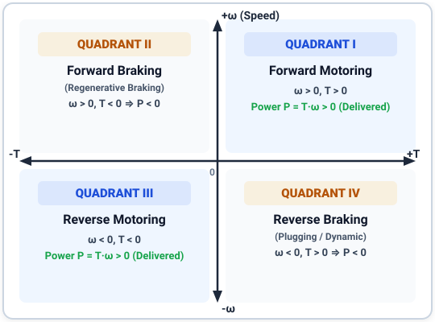
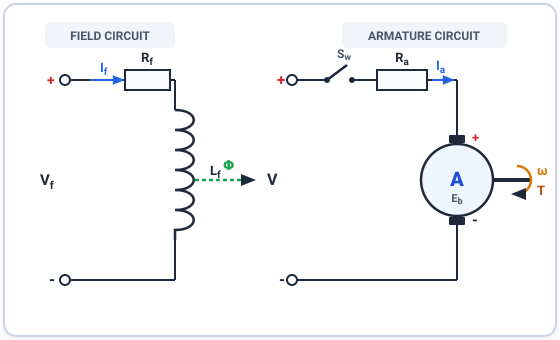
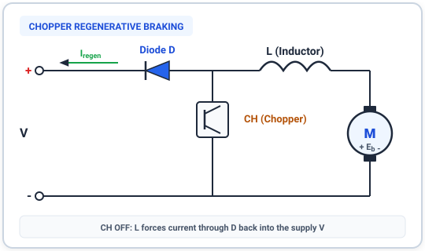
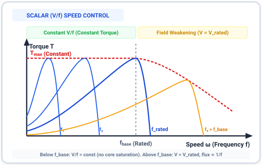

Electric Drives — Mid Sem¶
Syllabus¶
- DC motor characteristics — emf/torque equations, torque-speed curves, armature voltage control, flux weakening
- Chopper fed DC drive — duty ratio control, steady-state operation, current ripple, losses & efficiency
- Multi-quadrant DC drive — four-quadrant operation, 1/2/4-quadrant choppers, regenerative braking
- Closed-loop control of DC drive — inner current & outer speed loop, dynamic model, transfer functions
- Induction motor characteristics — equivalent circuit, torque-slip, fan/pump loads, flux weakening
- Scalar (V/f) control — 3-phase VSI, PWM/SVM, steady-state V/f analysis
- Slip ring induction motor control — rotor resistance control, slip power recovery
Main textbook: Fundamentals of Electrical Drives — G.K. Dubey
Q1. Describe the 4-quadrant operation of an electrical drive. (5 marks · Mid Sem)¶
An electric drive operates across four distinct quadrants on the torque-speed (\(\omega-T\)) plane, determined by the polarities of rotational speed and electromagnetic torque.

Illustration: 4-Quadrant Drive Operating Characteristics on the Torque-Speed PlaneDetailed Technical Explanation¶
An electric motor can operate either as a motor (converting electrical power to mechanical power) or as a generator/brake (converting mechanical power back to electrical power or heat). The operational quadrant is dictated by the direction of angular speed \(\omega\) and developed electromagnetic torque \(T\):
-
Quadrant I — Forward Motoring:
- Conditions: Angular speed \(\omega > 0\) and developed torque \(T > 0\).
- Power Flow: Mechanical power \(P = T \cdot \omega > 0\) (power is transferred from the source to the mechanical load).
- Practical Example: An electric train or EV accelerating forward on a level track, or a crane hoist lifting a loaded container upwards.
-
Quadrant II — Forward Braking (Regenerative / Generating):
- Conditions: Angular speed \(\omega > 0\) and developed torque \(T < 0\).
- Power Flow: Mechanical power \(P = T \cdot \omega < 0\) (energy is extracted from the moving kinetic load and returned to the electrical supply).
- Practical Example: An electric vehicle braking while moving forward, or an electric locomotive decelerating down a steep slope.
-
Quadrant III — Reverse Motoring:
- Conditions: Angular speed \(\omega < 0\) and developed torque \(T < 0\).
- Power Flow: \(P = (-T) \cdot (-\omega) > 0\) (power is delivered to drive the mechanical load in reverse).
- Practical Example: A rolling mill reversing direction or an EV driving in reverse gear.
-
Quadrant IV — Reverse Braking:
- Conditions: Angular speed \(\omega < 0\) and developed torque \(T > 0\).
- Power Flow: \(P = T \cdot \omega < 0\) (the motor produces positive torque opposing reverse motion to decelerate the load).
- Practical Example: Controlled lowering of an empty hoist cage where gravitational torque acts in the reverse direction.
Source: G.K. Dubey, Fundamentals of Electrical Drives, Ch. 1
Q2. Derive the torque-speed equation for a separately excited DC motor. (5 marks · Mid Sem)¶
The steady-state torque-speed characteristic of a separately excited DC motor reveals an inherently linear speed-droop relationship governed by armature resistance and field excitation flux.

Illustration: Separately Excited DC Motor Equivalent Circuit SchematicMathematical Derivation¶
Assumptions:
- Steady-state operating conditions with pure DC supply.
- Constant field excitation current (\(I_f = \text{constant} \implies \Phi = \text{constant}\)).
- Negligible armature reaction demagnetization effect.
Step 1: Armature Circuit Voltage Balance Equation
The applied terminal voltage \(V\) supplies the induced back EMF \(E_b\) and the ohmic voltage drop across armature winding resistance \(R_a\):
$$ V = E_b + I_a R_a $$
where \(I_a\) is the armature current.
Step 2: Induced Back EMF Relation
The back EMF generated in the rotating armature conductors cutting magnetic flux is:
$$ E_b = K_b \Phi \omega = K \Phi \omega $$
where \(K = \frac{P Z}{2 \pi A}\) is the machine structural constant, \(\Phi\) is the magnetic flux per pole in Webers, and \(\omega\) is the rotor speed in rad/s.
Step 3: Electromagnetic Developed Torque Relation
The electromagnetic torque developed by the interaction of flux and armature current is:
$$ T = K_t \Phi I_a = K \Phi I_a $$
Solving for armature current \(I_a\):
$$ I_a = \frac{T}{K \Phi} $$
Step 4: Substitution into Voltage Equation
Substitute the expressions for \(E_b\) and \(I_a\) into Step 1:
$$ V = K \Phi \omega + \left(\frac{T}{K \Phi}\right) R_a $$
Step 5: Final Governing Torque-Speed Equation
Rearranging to solve for angular speed \(\omega\):
$$ \omega = \frac{V}{K \Phi} - \frac{R_a}{(K \Phi)^2} T $$
Analytical Interpretation:¶
-
Ideal No-Load Speed (\(\omega_0\)): At zero developed torque (\(T = 0\)): $$ \omega_0 = \frac{V}{K \Phi} $$
-
Speed Droop Slope: The speed falls linearly with increasing load torque with a slope equal to: $$ m = -\frac{R_a}{(K \Phi)^2} $$ Because \(R_a\) is typically very small in modern industrial DC machines, the slope is slight, providing an almost constant (stiff) speed characteristic across rated load.
Source: G.K. Dubey, Fundamentals of Electrical Drives, Ch. 2
Q3. Explain the principle of regenerative braking in a chopper-fed DC drive. (5 marks · Mid Sem)¶
Regenerative braking in a chopper-fed DC drive operates on the step-up (boost) chopper principle, allowing mechanical kinetic energy from the rotating motor to be boosted and fed back into the main DC power source.

Illustration: Step-Up Chopper Topology for DC Motor Regenerative BrakingOperating Principle & Circuit Action¶
During regenerative braking, the motor field remains excited while the armature acts as a DC generator with induced EMF \(E_b\). The circuit behaves as a boost converter consisting of the motor back EMF \(E_b\), series smoothing inductor \(L\), power semiconductor switch (chopper \(CH\)), and freewheeling feedback diode \(D\):
-
Mode 1 — Chopper ON (\(0 \le t \le t_{on}\)):
- Switch \(CH\) is closed. Current flows from the motor armature \(E_b\) through inductor \(L\) and switch \(CH\), completing the loop.
-
Energy is extracted from the rotating kinetic mass of the motor and stored in the magnetic field of inductor \(L\): $$ E_b = L \frac{di_a}{dt} + R_a i_a $$
-
Armature current rises linearly, developing an opposing electromagnetic braking torque (\(T = K\Phi I_a\)).
-
Mode 2 — Chopper OFF (\(t_{on} \le t \le T\)):
- Switch \(CH\) is opened. Because inductor current cannot drop discontinuously, the voltage across inductor \(L\) reverses polarity (L Lenz's law).
- The combined induced voltage \((E_b + L \frac{di_a}{dt})\) exceeds the DC supply voltage \(V\).
- Feedback diode \(D\) becomes forward-biased, forcing the stored energy and generated current to flow directly back into the DC supply \(V\).
Average Armature Terminal Voltage: $$ V_a = (1 - \delta) V $$ where \(\delta = \frac{t_{on}}{T}\) is the chopper duty ratio. By dynamically varying the duty ratio \(\delta\), the effective braking torque and braking speed can be precisely regulated down to very low speeds.
Source: G.K. Dubey, Fundamentals of Electrical Drives, Ch. 3
Q4. Explain scalar (V/f) speed control of a 3-phase induction motor. (5 marks · Mid Sem)¶
Scalar \(V/f\) control regulates the synchronous speed of a 3-phase induction motor by varying stator frequency while simultaneously adjusting terminal voltage to maintain constant magnetic flux in the core.

Illustration: Induction Motor Torque-Speed Curves under Variable Frequency (V/f) ControlTheoretical Analysis & Working Principle¶
The synchronous speed \(\omega_s\) of a 3-phase induction motor with \(P\) poles supplied at frequency \(f\) is: $$ \omega_s = \frac{4\pi f}{P} \quad (\text{or } N_s = \frac{120 f}{P}) $$ Thus, motor speed can be smoothly controlled by altering the stator frequency \(f\).
Why Voltage Must Be Adjusted With Frequency (\(V/f = \text{constant}\)):
From Faraday's law of electromagnetic induction, the induced stator EMF \(E_1\) is related to air-gap flux \(\Phi_m\) by:
$$ E_1 = 4.44 \cdot k_w \cdot f \cdot N_{ph} \cdot \Phi_m \implies \Phi_m \approx \frac{V_1}{4.44 \, k_w \, N_{ph} \, f} \propto \frac{V_1}{f} $$
- If Frequency Decreases with Constant Voltage:
- The flux \(\Phi_m \propto \frac{V}{f}\) would increase rapidly.
- This drives the magnetic core into deep magnetic saturation, causing excessive magnetizing current, severe overheating, and high harmonic distortion.
- If Frequency Increases with Constant Voltage:
- The flux \(\Phi_m\) decreases, causing a steep decline in maximum breakdown torque (\(T_{max} \propto \Phi_m^2\)).
Operating Regions:¶
- Region 1 — Sub-Base Speed (\(f \le f_{base}\), Constant Torque Region):
- Both voltage and frequency are scaled proportionally: \(\frac{V_1}{f} = \text{constant}\).
- Air-gap flux \(\Phi_m\) is held constant at rated value.
- Maximum breakdown torque \(T_{max}\) remains constant across this speed range.
- Voltage Boost at Low Frequencies: At very low frequencies (\(< 15\text{ Hz}\)), stator resistance drop \(I_1 R_1\) becomes significant compared to \(E_1\). An additional voltage offset (voltage boost) is applied to maintain rated flux.
- Region 2 — Above Base Speed (\(f > f_{base}\), Field Weakening Region):
- Stator voltage reaches rated insulation limit (\(V_1 = V_{rated}\)) and cannot be increased further.
- Only frequency \(f\) is increased. Consequently, flux weakens (\(\Phi_m \propto \frac{1}{f}\)), and maximum torque decreases proportionally to \(\frac{1}{f^2}\) (constant power mode).
Source: G.K. Dubey, Fundamentals of Electrical Drives, Ch. 5